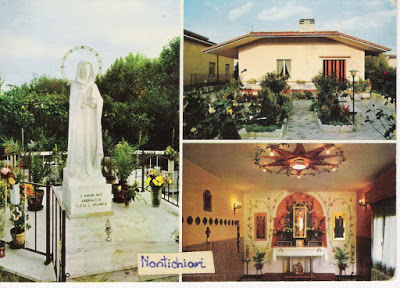
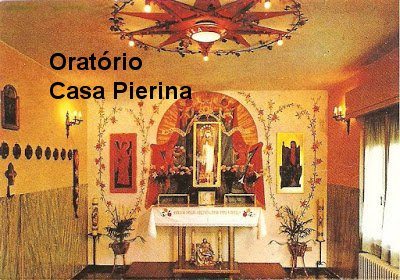
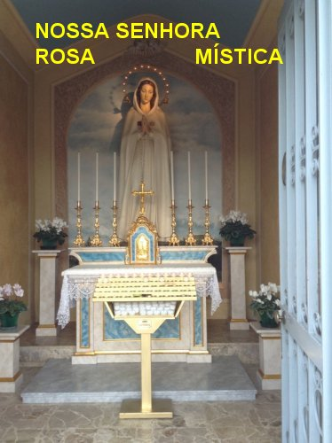

MISS�O CUMPRIDA
PIERINA EM SUA CASA
Enquanto estava morando numa
casa em Montichiari, pr�ximo a Igreja, os devotos benfeitores constru�ram uma
casa num lugarejo pr�ximo, e depois a doaram a 
Na verdade, a casa que foi constru�da e doada a Pierina, est� localizada em Broschetti, dois quil�metros distantes do centro de Montichiari e aproximadamente tr�s quil�metros da vila de Fontanelle, onde Pierina n�o podia ir, em face da proibi��o imposta pela autoridade eclesi�stica que a impedia de ir � fonte, apesar dos desejos dela e da VIRGEM MARIA.
CASA DA FONTE
Na apari��o do dia 27/Julho/1969, NOSSA SENHORA manifestou o desejo de que tamb�m acontecesse a constru��o da Casa da Fonte, que estava sendo apoiada pelo Monsenhor Rossi. Isto por que, esta casa seria destinada a recep��o dos peregrinos, assim como preparo dos mesmos, para imers�o no Tanque da Fonte. Ent�o seria na verdade, uma excelente casa de apoio. E esta obra tamb�m foi constru�da pelos fi�is, ao lado da FONTE DA GRA�A.
ORAT�RIO PARTICULAR � PEQUENA CAPELA

Depois de pronta a Capela e devidamente decorada, no dia 25/Julho/1971, NOSSA SENHORA apareceu a Pierina na nova casa, apresentando um programa para um Cen�culo de Ora��o e um Convite para os peregrinos ali rezar o Ros�rio. De modo que a Capela auxilia verdadeiramente aos peregrinos que demandam a Fontenelle para rezar e suplicar a miseric�rdia Divina, assim como para quem vai visitar um local sagrado, onde a M�E DE DEUS esteve e aben�oou uma Fonte de �gua, para restituir a sa�de aos enfermos e doentes que t�m f� no SENHOR.
DIVULGADOR DA DEVO��O
Nesse per�odo surgiu um grande
divulgador da devo��o a NOSSA SENHORA ROSA M�STICA. Trata-se do Padre Taddeo
Laux, pertencente � Ordem Religiosa dos 
Durante a sua vida, Padre Taddeo foi agraciado com o precioso dom de ter tido diversas apari��es de NOSSA SENHORA, que o auxiliou em situa��es particulares e tamb�m como estimulo para ter for�as e disposi��o a prosseguir com sua obra.
EXCELENTE PONTO DE APOIO
A casa que Pierina ganhou de presente continua sendo, desde aquela �poca, um ponto de refer�ncia para os peregrinos. A vidente estava sempre pronta a interceder n�o s� para quem pedia ora��o, mas, tamb�m para consolar, aconselhar e realizar obras de convers�o do cora��o.
Atenciosamente ela sempre assistia a todos os doentes que chegavam � fonte. E fez isso por muitos anos, com amor e extremada dedica��o.
PARTIU PARA A ETERNIDADE FELIZ
Os �ltimos anos da vida de Pierina Gilli foram entristecidos por v�rias doen�as que voltaram a seu corpo, talvez como se fosse uma esp�cie de an�ncio Divino, de que o seu tempo terrestre estava terminando. E os problemas de sa�de foram tantos, que ela foi obrigada h� passar os seus �ltimos meses de vida numa cadeira de rodas. No final de 1990, o seu estado de sa�de se agravou, e Pierina morreu pacificamente na sua casa residencial, na localidade de Broschetti, no dia 12 de janeiro de 1991, com 80 anos de idade, e com sua miss�o integralmente cumprida, para a maior gl�ria de DEUS e satisfa��o da VIRGEM MARIA.